Du startest hier mit Spulenarten und arbeitest danach weiter zu Erdmagnetfeld, Teilchenbahnen, Massenspektrometer, Anwendungen und Simulationen. Wenn du die Grundlagen noch einmal brauchst, öffne Magnetische Felder 1.
Die Wirkung eines Eisenkerns und die Permeabilitätszahl \(\mu_r\) passen zur Spulenformel im Basisfach. Hysteresekurven, Sättigung und Restmagnetisierung sind eine Leistungsfach-Vertiefung.
Die Formel der schlanken Spule gilt nur gut, wenn die Spule lang gegenüber ihrem Durchmesser ist. Bei kurzen Spulen ist das Magnetfeld entlang der Mittelachse nicht konstant: Es ist in der Mitte am stärksten und fällt nach außen schnell ab.
Außerdem spielt das Material im Inneren der Spule eine große Rolle. Luft, Papier, Kunststoff oder Kupfer verändern das Feld kaum. Eisen, Nickel und Cobalt können das Feld stark verstärken. Solche Stoffe heißen ferromagnetisch.
Das ist didaktisch wichtig: Die Spulenformel ist kein Allzweckwerkzeug für jede Spule. Sie ist ein Modell für lange, schlanke Spulen. Bei kurzen Spulen, Helmholtzspulen oder Spulen mit Eisenkern musst du prüfen, ob zusätzliche Geometriefaktoren oder Materialfaktoren auftreten.
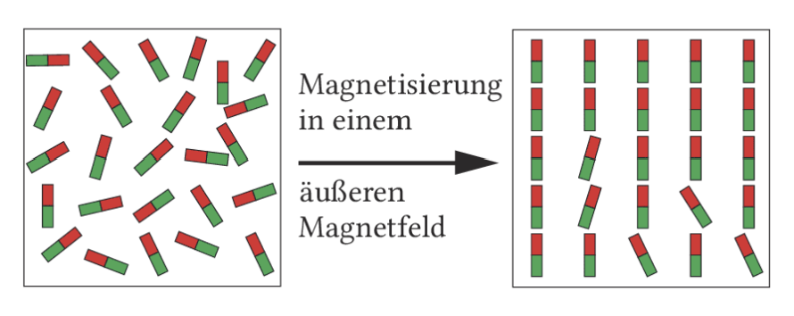
\(B_m=\mu_r\cdot B_0\)
\(B_0\) ist die Flussdichte der leeren Spule, \(B_m\) die Flussdichte mit Material. \(\mu_r\) ist die Permeabilitätszahl des Materials.
Für ferromagnetische Stoffe gilt \(\mu_r\gg1\). Deshalb verwendet man weiches Eisen in Elektromagneten, etwa auf dem Schrottplatz. Magnetisch harte Werkstoffe behalten eine starke Restmagnetisierung und werden für Permanentmagnete genutzt.
Magnetisch weich bedeutet nicht mechanisch weich. Gemeint ist: Das Material lässt sich leicht magnetisieren und verliert die Magnetisierung nach Abschalten des Feldes wieder weitgehend. Magnetisch hart bedeutet: Die Ausrichtung bleibt stärker erhalten.
Die Hysteresekurve beschreibt, dass \(B_m\) nicht nur vom aktuellen Spulenfeld abhängt, sondern auch von der Vorgeschichte der Magnetisierung. Begriffe wie Neukurve, Sättigung \(B_S\) und Restmagnetisierung \(B_R\) sind Leistungsfach-Vertiefung.
Das Erdmagnetfeld ist ein sinnvoller Anwendungskontext für beide Kursarten. Die qualitative Kompassdeutung ist Grundlagenwissen; die rechnerische Bestimmung mit Spule, Inklination und Komponenten ist eine Vertiefung.
Eine Kompassnadel richtet sich in Nord-Süd-Richtung aus, weil die Erde ein Magnetfeld besitzt. Der magnetische Südpol liegt in der Nähe des geografischen Nordpols; deshalb zeigt der Nordpol der Kompassnadel nach Norden. Die Magnetpole stimmen aber nicht genau mit den geografischen Polen überein und wandern mit der Zeit.
Die Abweichung von der geografischen Nordrichtung heißt Deklination. Der Winkel, unter dem Feldlinien gegen die Erdoberfläche geneigt sind, heißt Inklination. In Deutschland liegt die Inklination ungefähr zwischen \(63^\circ\) und \(70^\circ\).
Eine gewöhnliche Kompassnadel kann nur in der Horizontalebene drehen. Sie reagiert deshalb auf die Horizontalkomponente \(B_h\). Eine Inklinationsnadel kann sich zusätzlich nach oben oder unten neigen und zeigt die Richtung des gesamten Feldvektors.
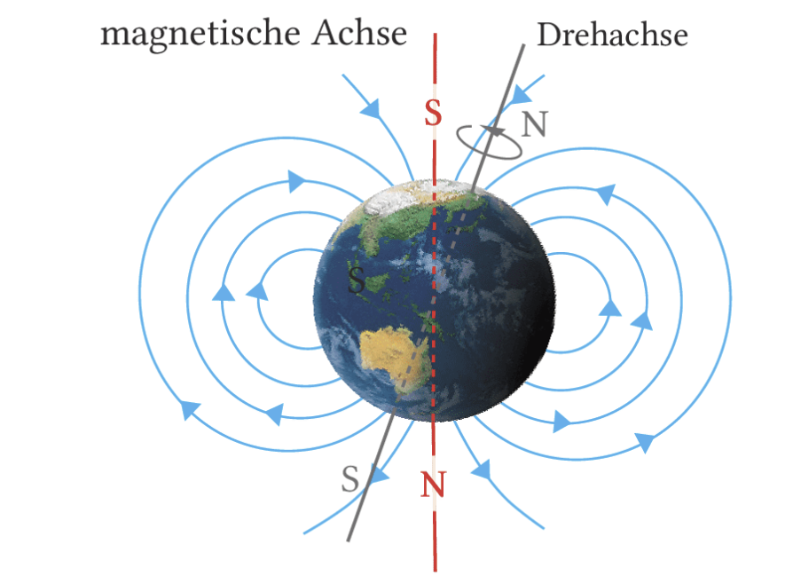
Im Erdinneren ist es zu heiß, damit Eisen dauerhaft ferromagnetisch bleibt. Das Erdmagnetfeld entsteht durch elektrische Ströme im Erdinneren, ähnlich einem Dynamo. Viele Details sind weiterhin Forschungsgegenstand.
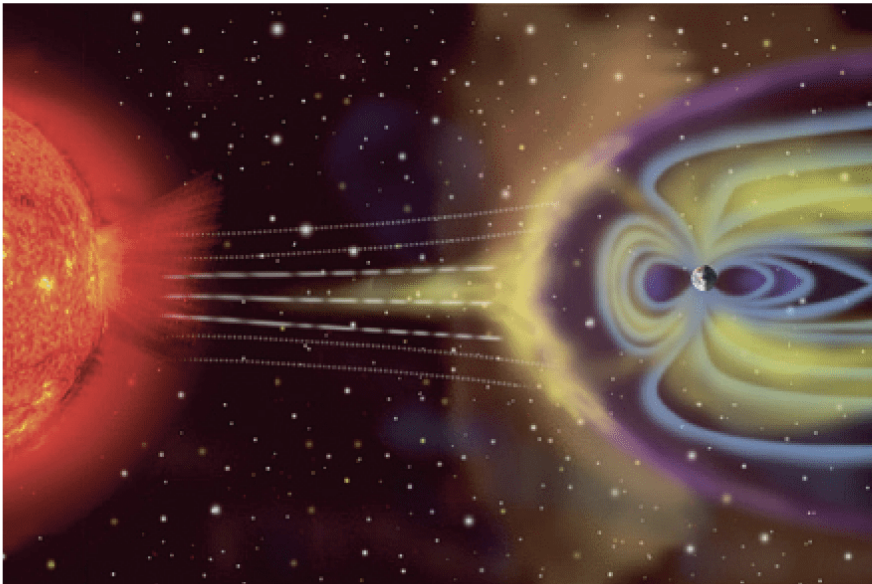
Der Sonnenwind ist ein Strom geladener Teilchen von der Sonne. Er besitzt selbst ein Magnetfeld und verformt das Erdmagnetfeld. Das Erdmagnetfeld schützt die Erde teilweise vor diesen Teilchen.
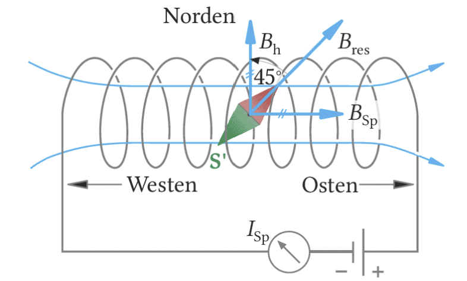
\(B_h=B\cos\delta\), \(\quad B=\frac{B_h}{\cos\delta}\)
\(B_h\) ist die Horizontalkomponente des Erdmagnetfeldes, \(\delta\) der Inklinationswinkel.
Richtet man eine Spule so aus, dass ihr Feld senkrecht zu \(B_h\) steht, überlagern sich beide Felder. Wird die Kompassnadel um \(45^\circ\) abgelenkt, sind \(B_\mathrm{Sp}\) und \(B_h\) gleich groß. Dann kann man \(B_h\) aus der Spulenformel berechnen.
Zeichne \(B_h\) nach Norden und \(B_\mathrm{Sp}\) nach Osten oder Westen. Die Kompassnadel zeigt in Richtung der Resultierenden. Bei \(45^\circ\) sind die beiden rechtwinkligen Komponenten gleich groß.
Im Basisfach wird die Kreisbahn geladener Teilchen im Magnetfeld qualitativ beschrieben. Die Radiusformel, spezifische Ladung und Elektronenmasse sind Leistungsfachstoff.
Im Fadenstrahlrohr wird ein Elektronenstrahl in einem homogenen Magnetfeld sichtbar gemacht. Ohne Magnetfeld läuft der Strahl gerade. Schaltet man das Magnetfeld ein, wirkt die Lorentzkraft senkrecht zur Bewegungsrichtung. Sie verändert die Richtung der Geschwindigkeit fortlaufend und wirkt wie eine Zentripetalkraft. Die Elektronen laufen auf einer Kreisbahn.
Der leuchtende Kreis ist kein Draht und keine Spur im Glas. In der Röhre befindet sich Gas mit geringem Druck. Elektronen stoßen mit Gasatomen zusammen und regen sie zum Leuchten an. So wird die Bahn des Elektronenstrahls sichtbar.
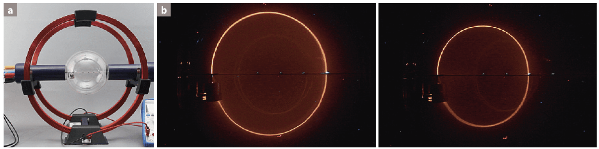
Für senkrechten Eintritt gilt \(F_L=F_Z\). Damit erhält man \(e v B=\frac{m_e v^2}{r}\).
\(r=\frac{m_e}{e}\frac vB\)
Bei größerem \(B\) wird der Radius kleiner; bei größerer Geschwindigkeit \(v\) wird der Radius größer.
\(\frac e{m_e}=\frac{2U}{B^2r^2}\)
Mit Beschleunigungsspannung \(U\), Radius \(r\) und Flussdichte \(B\) lässt sich die spezifische Ladung des Elektrons bestimmen.
Erhöht man \(B\), wird der Kreis enger. Erhöht man die Beschleunigungsspannung \(U\), steigt \(v\), und der Radius wird größer.
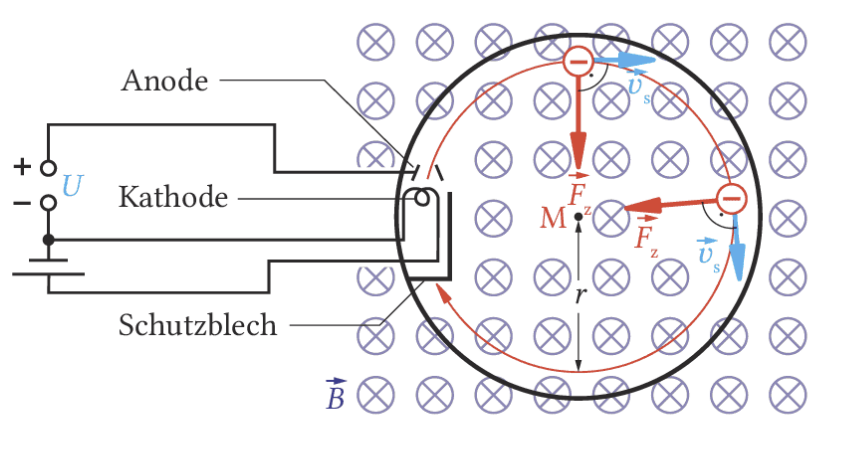
Die Beschleunigungsspannung stellt die Geschwindigkeit der Elektronen ein. Die Stromstärke im Helmholtzspulenpaar stellt \(B\) ein. Aus dem sichtbaren Kreisradius kann man \(e/m_e\) bestimmen. Mit bekannter Elementarladung folgt \(m_e\approx9{,}1\cdot10^{-31}\,\mathrm{kg}\).
Gekreuzte elektrische und magnetische Felder, wienscher Geschwindigkeitsfilter und Massenspektrometer sind Leistungsfachstoff. Im Basisfach kann die Idee als Anwendung der Lorentzkraft erwähnt werden.
Ionen aus einer Ionenquelle besitzen zunächst unterschiedliche Geschwindigkeiten. Für eine genaue Massenbestimmung braucht man aber Teilchen gleicher Geschwindigkeit. Dazu nutzt man einen wienschen Geschwindigkeitsfilter: Ein elektrisches Feld und ein magnetisches Feld stehen senkrecht zueinander und auch senkrecht zur Teilchenbewegung.
Die elektrische Kraft und die Lorentzkraft werden so ausgerichtet, dass sie entgegengesetzt wirken. Nur wenn beide Beträge gleich groß sind, bewegt sich das geladene Teilchen geradlinig weiter. Schnellere oder langsamere Teilchen werden abgelenkt und gelangen nicht durch die nächste Blende.
Der Filter sortiert also nicht nach Masse, sondern zunächst nach Geschwindigkeit. Das ist der Trick: Erst wenn alle durchgelassenen Teilchen dieselbe Geschwindigkeit besitzen, kann der Bahnradius im nächsten Magnetfeld als Hinweis auf Masse und Ladung genutzt werden.
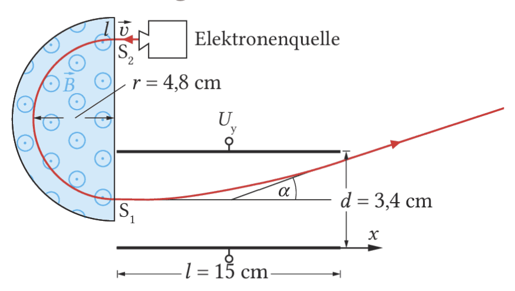
\(F_\mathrm{el}=|q|E\), \(\quad F_\mathrm L=|q|vB\)
Die Felder werden so eingestellt, dass beide Kräfte entgegengesetzt gerichtet sind.
\(v=\frac EB\)
Nur Teilchen mit dieser Geschwindigkeit durchlaufen den Geschwindigkeitsfilter geradlinig. Die Bedingung ist unabhängig von Masse und Ladungsbetrag.
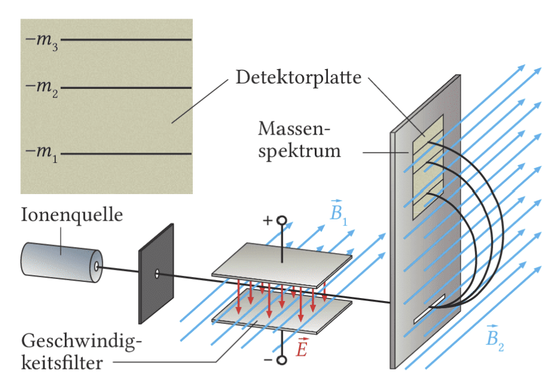
Nach dem Filter treten Ionen gleicher Geschwindigkeit in ein zweites homogenes Magnetfeld ein. Dort wirkt die Lorentzkraft als Zentripetalkraft. Der Radius der Kreisbahn hängt von Masse, Ladung, Geschwindigkeit und Magnetfeld ab.
\(r=\frac m q\frac v{B_2}\)
Bei gleicher Ladung und gleicher Geschwindigkeit haben schwerere Ionen größere Radien. Auf der Detektorplatte erscheinen deshalb getrennte Trefferlinien.
1. Im Filter: \(v=E/B_1\). 2. Im Ablenkmagneten: \(r=\frac m q\frac v{B_2}\). 3. Nach \(m\) umstellen. 4. Mit \(1u=1{,}66\cdot10^{-27}\,\mathrm{kg}\) in Nukleonenzahlen umrechnen.
Massenspektrometer zeigen, dass viele chemische Elemente aus Isotopen bestehen. Isotope besitzen die gleiche Protonenzahl, aber unterschiedliche Neutronenzahl und damit unterschiedliche Masse. Das Isotopenverhältnis ist wichtig in Geologie, Archäologie und Umweltphysik.
Zyklotron, kombinierte E- und B-Felder und die Abituraufgabe mit Halbkreisbahn plus Kondensatorablenkung sind Leistungsfach-Vertiefung.
In Teilchenbeschleunigern sollen geladene Teilchen sehr hohe Energien erreichen. Statt eine extrem hohe Spannung einmal zu durchlaufen, lässt man sie viele Beschleunigungsstrecken nacheinander durchlaufen. Das Zyklotron ist ein klassisches Beispiel dafür.
Im Zyklotron werden positive Ionen zwischen zwei D-förmigen Metallhohlräumen immer wieder durch ein elektrisches Feld beschleunigt. Innerhalb der Dosen ist der Raum elektrisch feldfrei; dort zwingt ein starkes Magnetfeld die Ionen auf Halbkreisbahnen. Nach jedem Durchgang ist die Geschwindigkeit größer, also auch der Radius der Bahn.
Didaktisch ist das Zyklotron ein guter Test, ob du elektrische und magnetische Felder sauber trennst. Das elektrische Feld verrichtet Arbeit am Teilchen und erhöht seine kinetische Energie. Das Magnetfeld verrichtet im idealen Fall keine Arbeit, weil die Lorentzkraft immer senkrecht zur Bewegung steht; es krümmt nur die Bahn.
Zwischen den Dosen: Das E-Feld beschleunigt, die Energie nimmt zu. In den Dosen: Der Raum wirkt wie ein Faraday-Käfig; das E-Feld ist dort null, das B-Feld erzwingt die Halbkreisbahn. Diese Trennung hilft dir, Abituraufgaben übersichtlich zu lösen.
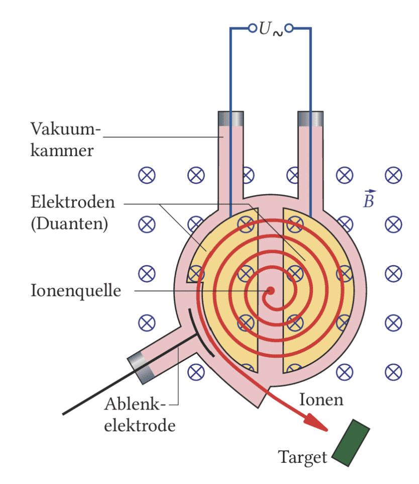
\(f=\frac1{2\pi}\frac{qB}{m}\)
Die notwendige Umpolfrequenz ist im klassischen Modell unabhängig von Radius, Geschwindigkeit und Energie.
Bei sehr hohen Geschwindigkeiten werden relativistische Effekte wichtig. Dann bleibt die Frequenz nicht mehr exakt konstant. Moderne Beschleuniger nutzen deshalb weiterentwickelte Konzepte.
Warum muss die Spannung zwischen den Dosen immer zum richtigen Zeitpunkt umgepolt werden? Formuliere deine Antwort mit „Beschleunigungsstrecke“ und „Richtung des elektrischen Feldes“.
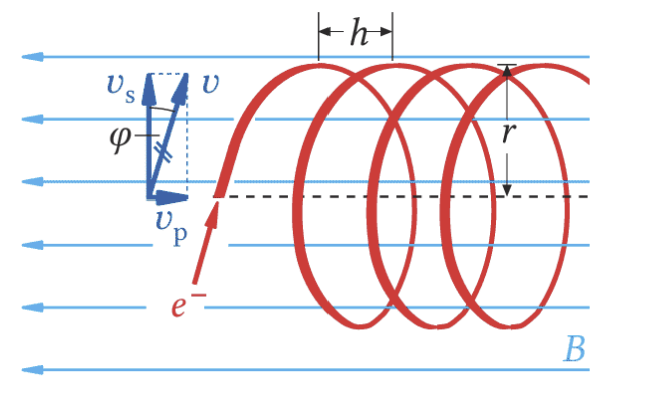
Das Magnetfeld lässt nur Elektronen mit passendem Kreisbahnradius durch die Blende. Danach treten sie mit dieser Geschwindigkeit in den Plattenkondensator ein. Dort entsteht wieder die bekannte waagrechte-Wurf-Struktur: gleichförmig in x-Richtung, beschleunigt in y-Richtung.
\(\tan\alpha=\frac{eU_y l}{m d v^2}\)
Diese Formel verknüpft die Ablenkung im Kondensator mit der spezifischen Ladung.
Die Beispiele eignen sich für beide Kursarten als Anwendungen. Die genaue Bahn- und Feldanalyse bei Penning-Fallen und magnetischen Linsen ist Leistungsfach-Vertiefung.
Magnetfelder spielen nicht nur im Physikraum eine Rolle. Sie strukturieren den Raum um die Erde, halten Teilchen in Forschungsapparaturen fest, fokussieren Elektronenstrahlen und speichern Informationen in technischen Geräten.
Beim Lesen dieser Seite sollst du immer fragen: Welche Rolle spielt das Magnetfeld hier? Es kann bewegte Ladungen auf gekrümmte Bahnen zwingen, magnetisierbare Materialien ausrichten oder Elektronenstrahlen gezielt formen. Dieselbe Grundidee taucht in sehr unterschiedlichen Anwendungen wieder auf.
Erdmagnetfeld, Sonnenwind, Polarlicht und Strahlungsgürtel zeigen Magnetfelder auf planetarer Skala.
Penning-Fallen und magnetische Linsen nutzen Felder, um einzelne Teilchen oder Elektronenstrahlen zu kontrollieren.
Festplatten und Elektromagnete nutzen Magnetisierung als Speicher- oder Wirkprinzip.
Der Sonnenwind transportiert geladene Teilchen zur Erde. Viele Teilchen werden durch das Erdmagnetfeld abgelenkt oder entlang von Feldlinien geführt. In Polnähe können beschleunigte Elektronen in die obere Atmosphäre eindringen und dort Atome zum Leuchten anregen.
Das Licht entsteht also nicht, weil Magnetfeldlinien selbst leuchten. Das Magnetfeld lenkt geladene Teilchen; die sichtbare Strahlung entsteht erst, wenn diese Teilchen Atome und Moleküle der Atmosphäre anregen.
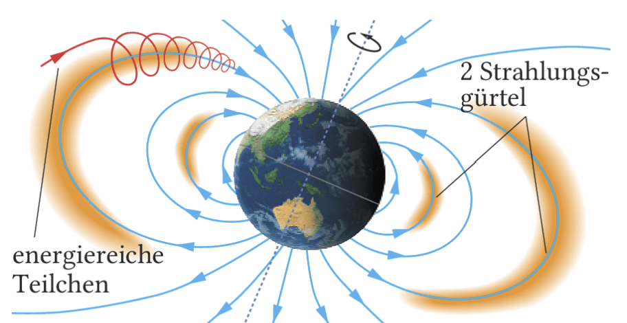
In den van-Allen-Strahlungsgürteln bewegen sich Protonen und Elektronen entlang magnetischer Feldlinien und pendeln zwischen Nord- und Südpolregion. Für Raumfahrer und Satelliten können diese Teilchen wegen ihrer ionisierenden Wirkung gefährlich werden.
Hier wird die Schraubenbahn-Idee anschaulich: Die Teilchen besitzen eine Bewegungskomponente um die Feldlinie und eine Komponente entlang der Feldlinie. Dadurch bleiben sie über längere Zeit im Magnetfeldbereich gefangen.
In der Schattenkreuzröhre breiten sich Elektronen zunächst geradlinig aus. Ein geeignetes Magnetfeld kann die Elektronenbahnen fokussieren. Dadurch wirkt das Magnetfeld ähnlich wie eine Sammellinse für Licht.
In einer Penning-Falle können einzelne geladene Teilchen, zum Beispiel Elektronen, Ionen oder Antiprotonen, über längere Zeit in einem kleinen Raumgebiet gespeichert werden. Dazu kombiniert man ein homogenes, zeitlich konstantes Magnetfeld mit einem inhomogenen, ebenfalls statischen elektrischen Feld.
Das Magnetfeld hält die geladenen Teilchen seitlich auf gekrümmten Bahnen, das elektrische Feld verhindert das Entweichen in vertikaler Richtung. Solche Fallen werden in Präzisionsexperimenten eingesetzt. Hans Dehmelt erhielt 1989 den Nobelpreis für Experimente mit Elektronen und Positronen in Penning-Fallen.
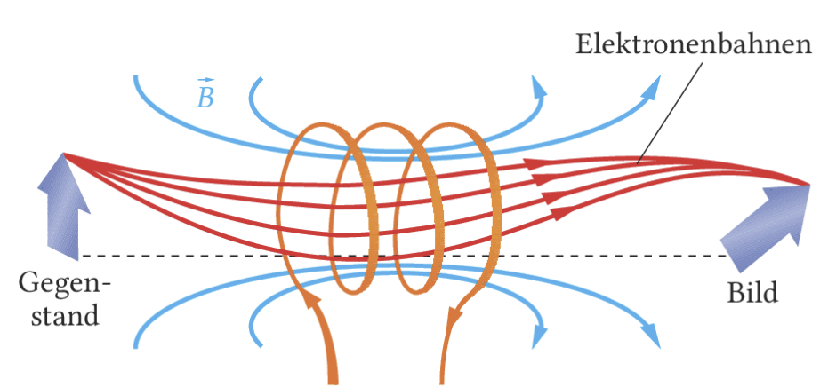
Für große Vergrößerungen nutzt man nicht homogene Felder, sondern gezielt geformte inhomogene Magnetfelder. In Elektronenmikroskopen werden solche magnetischen Linsen eingesetzt.
Der Vergleich mit einer Glaslinse ist hilfreich, aber nicht wörtlich gemeint: Eine Glaslinse bricht Licht, eine magnetische Linse übt Kräfte auf bewegte Elektronen aus. In beiden Fällen werden Strahlen so beeinflusst, dass ein Bild entsteht.
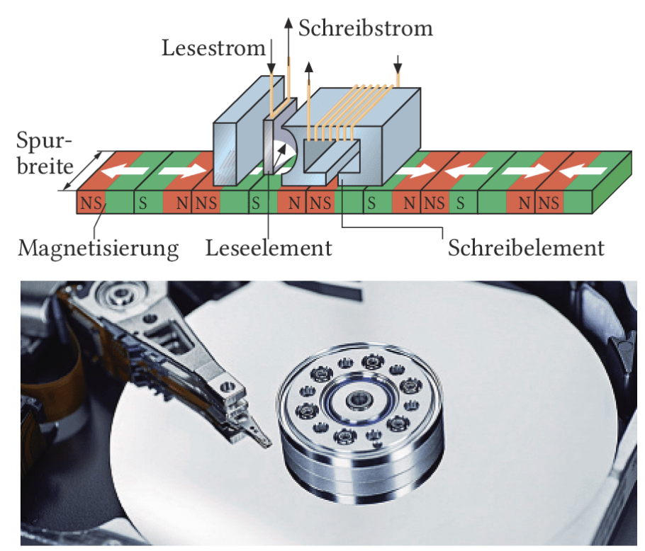
Bei klassischen Festplatten magnetisiert der Schreibkopf winzige Bereiche der Datenscheibe. Beim Lesen reagiert der Lesekopf auf das Magnetfeld dieser Bereiche. So werden Informationen als Reihen unterschiedlicher Magnetisierungsrichtungen gespeichert.
Das ist ein anderes Prinzip als bei Teilchenbahnen: Hier ist nicht die Lorentzkraft auf einzelne freie Teilchen im Vordergrund, sondern die dauerhafte Ausrichtung magnetischer Bereiche in einem Material.
Diese Seite bündelt das Kapitel. Die Aufgaben 1-3 sind nach dem gemeinsamen Kern gut bearbeitbar. Aufgaben 4-6 sind als Leistungsfach-Aufgaben markiert, weil sie Kreisbahnen, Massenspektrometer und Schraubenbahnen quantitativ nutzen.
Nutze die Zusammenfassung nicht nur zum Nachschlagen. Versuche zuerst, die Situation zu erkennen: Geht es um einen stromführenden Leiter, eine bewegte einzelne Ladung, eine Spule, ein Material im Magnetfeld oder eine technische Kombination mehrerer Felder?
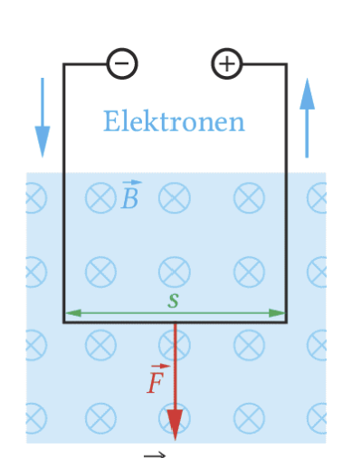
\(B=\frac{F}{I\cdot s}\), \(\quad [B]=1\,\mathrm T\)
\(\vec B\) zeigt in Richtung der magnetischen Feldlinien und beschreibt die Stärke des Magnetfeldes.
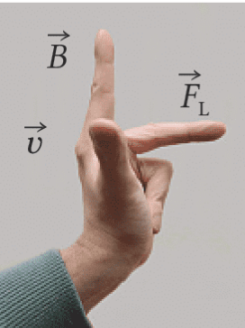
\(F_L=|q|v_sB\)
Die Lorentzkraft steht senkrecht zur Geschwindigkeit und senkrecht zum Magnetfeld. Sie ändert die Bewegungsrichtung, aber im reinen Magnetfeld nicht den Betrag der Geschwindigkeit.
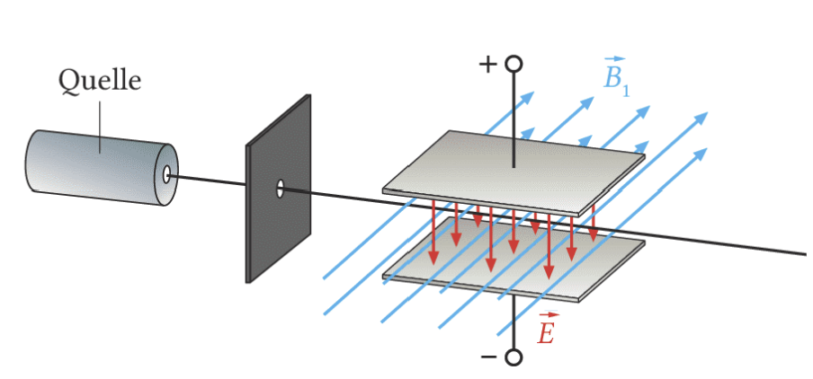
\(U_H=Bvh\), \(\quad B=\mu_0\mu_r\frac nl I\)
\(v=\frac EB\), \(\quad r=\frac m q\frac vB\)
Leiter im Magnetfeld: \(F=BIs\). Einzelnes Teilchen im Magnetfeld: \(F_L=|q|v_sB\). Kreisbahn: Lorentzkraft als Zentripetalkraft setzen. Spule: \(B=\mu_0\mu_r\frac nl I\). Geschwindigkeitsfilter: Kräftegleichgewicht \(F_\mathrm{el}=F_L\).
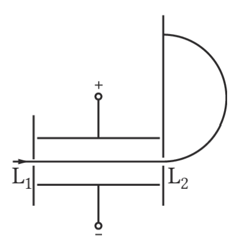
Bei Aufgabe 5 brauchst du zuerst das Kräftegleichgewicht im Geschwindigkeitsfilter. Danach nutzt du die Kreisbahnformel im zweiten Magnetfeld.
Diese Seite geht über die reine Kraftwirkung hinaus und betrachtet quantitative Bahnformen. Nutze sie für die zusätzlichen LF-Stunden.
Bewegt sich ein geladenes Teilchen senkrecht zu einem homogenen Magnetfeld, steht die Lorentzkraft immer senkrecht zur momentanen Geschwindigkeit. Sie wirkt dann wie eine Zentripetalkraft und erzeugt eine Kreisbahn. Hat das Teilchen zusätzlich eine Geschwindigkeitskomponente parallel zum Magnetfeld, entsteht eine Schraubenbahn.
Arbeite mit den Simulationen wie mit einem Experiment: Ändere immer nur einen Parameter, beobachte die Bahn und formuliere anschließend den passenden Je-desto-Zusammenhang. Wenn du mehrere Regler gleichzeitig veränderst, ist die Ursache der Änderung nicht mehr eindeutig.
1. Vorhersage notieren. 2. Einen Regler verändern. 3. Bahnkurve vergleichen. 4. Ergebnis mit der Formel begründen. Für die Kreisbahn ist die Leitformel \(r=\frac{m v}{|q|B}\).
Größeres \(v\) macht den Radius größer. Größeres \(B\) oder größeres \(|q|\) macht ihn kleiner.
Größeres \(B\) verkleinert den Radius. Größeres \(|E|\) beschleunigt entlang der Achse und streckt die Schraubenbahn.
Inhaltlich orientiert an Dorn/Bader: Physik Kursstufe, Kapitel zum magnetischen Feld. Die Kursart-Markierung wurde mit dem Bildungsplan Baden-Württemberg Physik V3.0 abgeglichen.